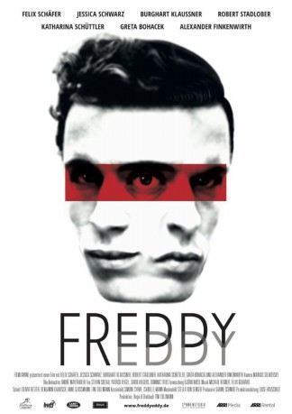

#9544 Freddy Eddy
 
 IMDB-Wertung: 7.1 / 10
IMDB-Wertung: 7.1 / 10  Metascore: 0
Metascore: 0 
Das Leben des Malers Freddy (Felix Schäfer) wird komplett auf den Kopf gestellt. Er soll seine Frau krankenhausreif geschlagen haben - doch er kann sich an nichts erinnern. Nicht nur wenden sich alle von ihm ab, auch das Sorgerecht für seinen Sohn ist in Gefahr. Die neue Nachbarin Paula (Jessica Schwarz) und ihre Tochter Mizi (Greta Bohacek), die Freddy noch ohne Vorurteile entgegenkommen, sind sein einziger Lichtblick. Da taucht plötzlich Eddy, sein imaginärer Freund aus Kindheitstagen auf, der ihm bis aufs Haar gleicht. Als sich die mysteriösen und brutalen Ereignisse häufen, versucht Freddy mit Hilfe seiner eigenen Vergangenheit Eddys Existenz auf die Spur zu kommen. Aber bald verwischen die Grenzen zwischen Realität, Halluzination und Wahnsinn, denn wie soll man beweisen, dass es jemanden gibt, den man sich eigentlich nur ausgedacht hat?
Jahr: 2016
Dauer: 94 Minuten
FSK: 16
Land: Deutschland Studio: FilmlawineTonspuren:
Untertitel:
Auflösung: 1080p (1920x800) Größe: 3532 MB
Genre: Thriller
Regisseur: Tini Tüllmann
Drehbuch:
Soundtrack: Michael Regner
Darsteller:
 Jessica Schwarz als Paula
Jessica Schwarz als Paula Burghart Klaußner als Dr. Weiss
Burghart Klaußner als Dr. Weiss Katharina Schüttler als Carlotta
Katharina Schüttler als Carlotta Robert Stadlober als Krishna
Robert Stadlober als Krishna Anna Unterberger als Sandra
Anna Unterberger als Sandra- Ingrid Mülleder als Frau Birkle
 Pierre Kiwitt als Teacher
Pierre Kiwitt als Teacher Timo Jacobs als Guy in Bar
Timo Jacobs als Guy in Bar Tim Oliver Schultz als Pool Attendant
Tim Oliver Schultz als Pool Attendant- Felix Schäfer als Freddy / Eddy
- Greta Bohacek als Mizi
- Alexander Finkenwirth als David
- Neriah Krase als Simon / Eddy as a child
- Luise Bähr als Banc Consultant
- Manuel Mairhofer als Antonio
- Daniel Christensen als Superintendent Winniger
- Talin Lopez als Police Officer Hofbauer
- Justus Carrière als Lawyer
 David Bredin als Bouncer Moritz
David Bredin als Bouncer Moritz- Sandra Schreiber als Nadja
- Renate Serwotke als Freddys Mother Hanna
- Simone Ascher als Cashier in Supermarket
- Kimberley Krump als Nicole
- Moritz Regenauer als Wolfi
- Britta Steffenhagen als Cashier at Swimming Pool
- Nadine von Volkmann als Laboratory Doctor
Datei: X:\2016(A-F)\Freddy Eddy (2016, FSK16, 1920x800).mkv seit 07.09.2018
Festplatte: HD 2016(A-Z)
 Es gibt insgesamt 147 Filme in der Gruppe '2016(A-F)'
Es gibt insgesamt 147 Filme in der Gruppe '2016(A-F)'